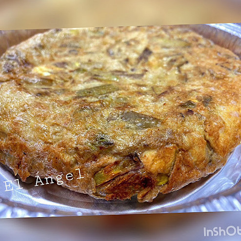
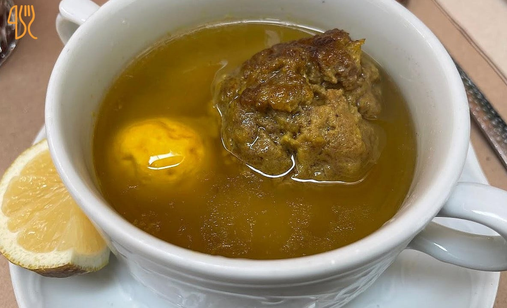
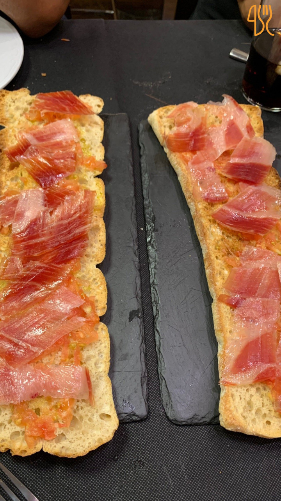
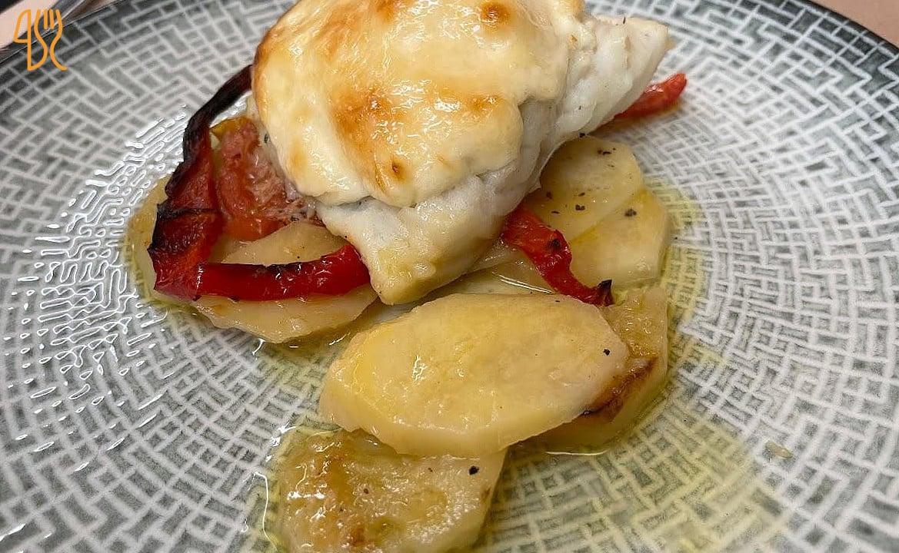
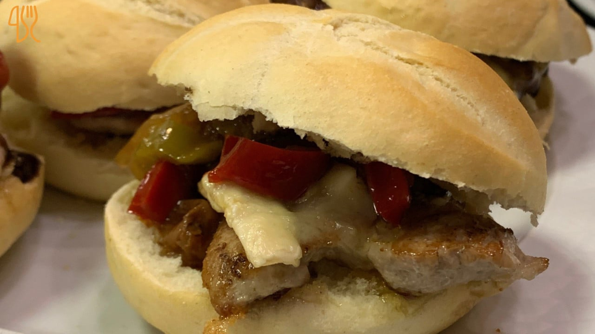
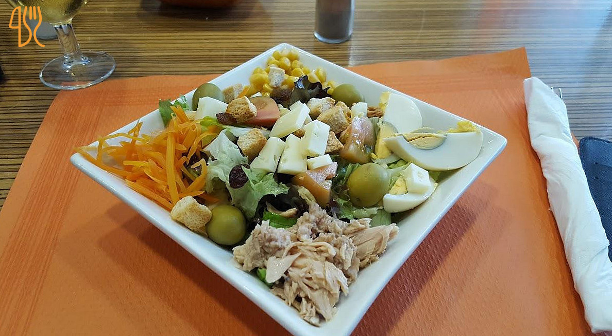

Galería
Una mirada al local.
Las fotos finales las trae el equipo de El Ángel. Estos huecos son recordatorios para los seis encuadres que mejor cuentan la casa — fachada, barra, sala, marisco, arroz y postre.






Te lo enseñamos en persona